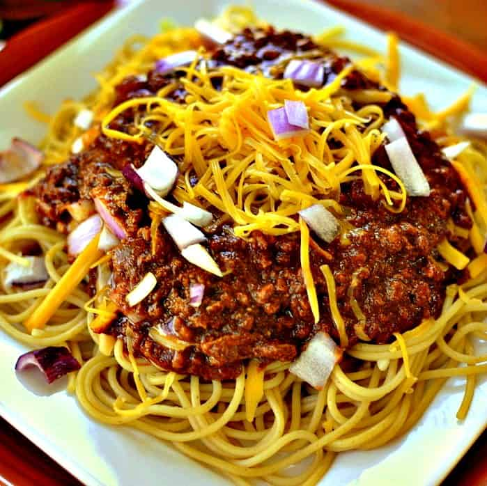

Cincinnati Chili

Description
Authentic Cincinnati Chili is a meaty, rich, and uniquely spiced chili from (you guessed it!) Cincinnati, Ohio. It's served over hot spaghetti with your choice of toppings. Don’t forget the cheese and oyster crackers!
Ingredients
- 2 pounds ground beef (80:20 is good)
- 1 (6-0unce) can tomato paste
- 4 cups water
- 1 (8-ounce) can tomato sauce
- 1 large onion minced (about 3 cups)
- 6 cloves garlic, minced
- 3 tablespoons chili powder
- 1 teaspoon cumin
- 1 teaspoon cinnamon
- 3/4 teaspoon ground allspice
- 1/4 ground cloves
- 1/2 teaspoon cayenne
- 2 teaspoons kosher salt
- 2 tablespoons Worchester sauce
- 1 tablespoon apple cider vinegar
- 1 ounce unsweetened chocolate, optional
Directions
-
Cook the tomato paste: Heat a large, heavy-bottomed pot or Dutch oven over medium-high heat. Add the tomato paste to the dry pot and cook, constantly scraping the bottom with a wooden spoon or silicone spatula, until the tomato smells rich and toasty and you start to see browned (not burned) patches in the bottom of the pot. This should take 1 to 3 minutes.
-
Combine the ingredients in a pot:
Remove the pot from heat and add the ground beef and water. Mix them together into a sludge. It will not look pretty, but press on. There's a method to this madness.
Return to medium-high heat and bring to a simmer, stirring all the while, so the sludge breaks up into a mealy paste. Add all the remaining ingredients except the vinegar and chocolate.
-
Simmer gently, uncovered, for 2 to 3 hours:
Stir the chili often. You want the volume to reduce a bit. (To be honest, just one hour of cook time is okay, but for optimal chili-ness, go long.)
-
Cool to room temperature, then refrigerate overnight:
Refrigerate in an air-tight covered container. (Note: you can eat the chili immediately if you want to.)
-
De-fat the chili:
The next day, lift or scrape off any solidified fat from the top of the chili and discard.
-
Warm and serve:
Bring to a rapid simmer, then add the vinegar and chocolate. (The chocolate won’t make it taste sweet—it adds a hint of sophisticated complexity and acts as a foil for all those spices.)
Serve any “way” (see headnotes). The chili will also keep refrigerated for up to a week or frozen for up to a year.
Homepage